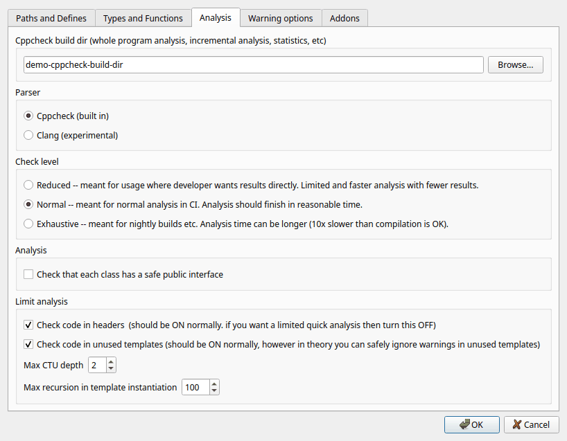
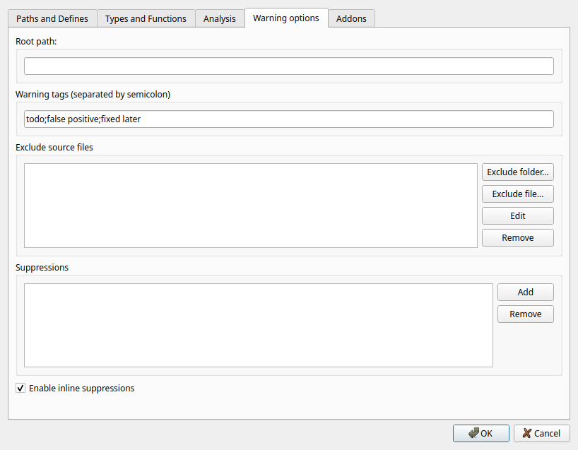
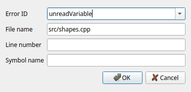
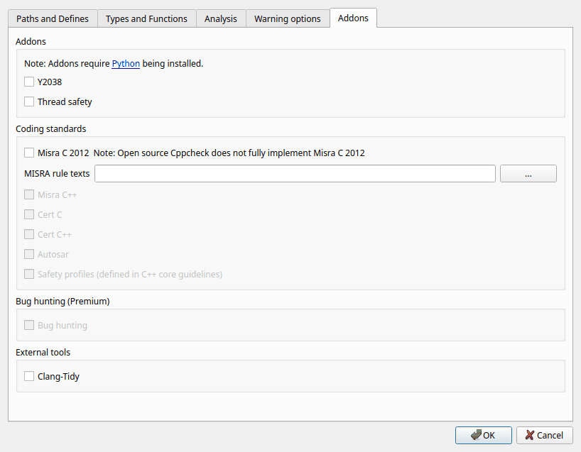

A project file (*.cppcheck) stores everything Cppcheck needs to
know to analyze your code: which files to analyze, include paths, defines,
libraries, platform, analysis options, suppressions, tags and addons. It is
an XML file, so you can put it in version control and share it with your
team. Paths in the project file are relative to the folder of the project
file.
Create a project with File > New Project File... and change it with File > Edit Project File.... Both open the Project file dialog described on this page. When you click OK the project file is saved and the analysis starts. Click Cancel to close the dialog without saving.
The dialog has five tabs:
On this tab you tell Cppcheck what code to analyze. You can either import a project from your build system, or enter the paths, defines and include paths yourself. Importing is recommended: you get the exact include paths and defines that the compiler uses, and you do not have to update the Cppcheck project when the build changes.
Click Browse... to select the project to import. Supported formats:
| Format | Notes |
|---|---|
Compile databasecompile_commands.json |
Contains the exact compiler command line of every source file. CMake
writes it when you configure with
-DCMAKE_EXPORT_COMPILE_COMMANDS=ON. Meson and Ninja write it
too, and for other build systems (for example make) you can create it
with tools such as Bear. When a compile database is imported, each
file is analyzed with just the configuration given on its command line. |
Visual Studio*.sln, *.slnx,
*.vcxproj |
Cppcheck reads the source files, include paths and defines of each
configuration (such as Debug|Win32 or
Release|x64). |
Borland C++ Builder 6*.bpr |
Click the brush button next to the field to remove the import.
When a project is imported, the Paths, Include Paths and Undefines fields are disabled because the information comes from the imported project. Defines and Include file can still be used; they are added to what the imported project says.
Analyze all Visual Studio configurations and Selected VS Configurations: only enabled when a Visual Studio solution or project is imported. A Visual Studio project usually has several configurations, and analyzing all of them takes time. Check Analyze all Visual Studio configurations to analyze every Debug and Release configuration. Otherwise check the configurations you want in the list. If you analyze several configurations of a file, warnings that are the same in all of them are only reported once.
The folders and files to analyze (only when no project is imported).
Click Add... to add a folder, select a path and click Edit to
change it, or Remove to remove it. All C and C++ source files in the
folders and their subfolders are analyzed (.c,
.cpp, .cxx, .cc, .c++,
.tpp, .txx, .ipp, .ixx).
Headers are analyzed when they are included from a source file.
To leave out some files or folders, use Exclude source files on the Warning options tab.
Preprocessor macros that are defined for the analysis, like the
-D option of a compiler. Separate them with semicolons, and give a
value with =:
DEBUG;VERSION=5;WORD=int
To understand when you need defines, you need to know how Cppcheck handles preprocessor conditions. A compiler only sees one configuration of your code. Cppcheck instead tries to analyze all configurations. Look at this code:
#ifdef A
code1
#endif
#ifdef B
code2
#endif
Cppcheck automatically analyzes the code both with and without
A and B defined, so bugs in both code1
and code2 are found. You normally do not have to set defines. Use
them when:
BUFFER_SIZE=1024,By default at most 12 configurations are analyzed for each file. If there are more, an information message tells you. Enable Force checking all #ifdef configurations in the preferences to analyze all of them, which can take a long time.
Macros that must never be defined, like the -U option of a
compiler. Separate them with semicolons:
A;C
In the example above, if A is undefined, Cppcheck does not
analyze the configuration where A is defined. Use this for
configurations that are never used, for example code for a platform you do not
support. It makes the analysis faster and avoids warnings for code you do not
care about.
The folders where Cppcheck looks for header files that are included with
#include "..." or #include <...>, like the
-I option of a compiler. Folders are searched in the order of the
list; use Up and Down to change the order.
Add the folders of your own headers and of the headers of 3rd party libraries that are part of your project. Cppcheck needs them to know your types, macros, functions and classes. Without them, some bugs can not be found and you may get false warnings.
Do not add the folders of the standard library and system headers
(for example /usr/include or the Visual Studio include
folders). Cppcheck has built-in knowledge of the standard library and of the
libraries you select on the Types and Functions tab, and analyzing the
system headers makes the analysis slow and can cause wrong results. That is
why the missingIncludeSystem information messages say that Cppcheck does
not need the standard headers.
A header file that is included before every source file, like the
-include option of GCC or /FI of Visual Studio. Use
it if your build forces a header to be included, for example a configuration
header with macros that all files need.

The platform decides the sizes of the basic types (short,
int, long, long long, pointers,
size_t, wchar_t) and whether char is
signed. Cppcheck uses this, for example, to find integer overflows, buffer
overruns with sizeof and portability problems.
Choose one of the built-in platforms:
For embedded targets and other special platforms, choose one of the
platform files (*.xml) in the list, for example
avr8.xml, arm32-wchar_t2.xml or
pic16.xml. You can write your own platform file and put it in the
folder of the project file; it then appears in the list. See the Cppcheck
manual for the format.
If you leave the platform empty, the platform selected in the Analyze menu of the main window is used.
Check the libraries that your code uses. Each library has a configuration
file (.cfg) that describes its functions, types and macros, for
example:
exit()),The standard library (std.cfg) is always used. Some
commonly used libraries are posix (Linux and Unix APIs),
windows (Windows API), gnu, qt, boost,
wxwidgets, gtk, sdl, opengl, openssl,
sqlite3 and googletest.
If your code uses a library that is not in the list, or your own library,
you can write a configuration file for it. Put the .cfg file in
the same folder as the project file and it appears in the list. You can create
and edit configuration files with the library
editor. Use Analyze > Reanalyze and check library to find
functions that are not configured.

A work folder for Cppcheck. Each project needs its own build dir; do not
share one build dir between projects. A new project automatically gets
<name>-cppcheck-build-dir next to the project file. If the
folder does not exist when the analysis starts, the GUI asks if it should
create it.
The build dir is optional, but strongly recommended. It is used for:
lastResults.xml) and shown when you open the project. The
Since date column shows when each warning was first seen.Do not put the build dir in version control. Edit > Clear results deletes the stored results in the build dir.
Cppcheck (built in) is recommended. Cppcheck has its own parser that works well even if the code can not be compiled, if headers are missing or if the code uses compiler extensions.
Clang (experimental) uses Clang to parse the code. Clang is run with a flag that makes it write its abstract syntax tree (AST); Cppcheck reads this AST, converts it and runs its checks on it. Clang must be installed (see Clang path in the preferences), and the code must be correct enough for Clang to accept it. This is experimental and not all checks work as well as with the built in parser.
How much time Cppcheck may spend on the analysis. A higher level finds more bugs but takes longer.
Check that each class has a safe public interface: normally Cppcheck only considers the values that are actually passed to a function. With this option, Cppcheck assumes that the arguments of public member functions can have any value, and warns if a function does not handle some value safely, even if no caller passes that value today. Use it if you want your classes to be robust against all possible use. It gives more warnings, and you must decide for each of them if it matters.
Check code in headers: should normally be on. If you turn it off, Cppcheck does not report warnings in the code of header files and skips some analysis of it. This can make the analysis much faster for code with large headers, but you will miss bugs in headers.
Check code in unused templates: should normally be on. If it is off, templates that are never instantiated are not analyzed. Cppcheck can not know the template arguments in unused templates, so the analysis of them is less precise. Templates that are used are always analyzed with the actual template arguments.
Max CTU depth: how deep the whole program analysis follows function calls between files (CTU means "cross translation unit"). A higher value finds bugs where values pass through more function calls, but makes the analysis slower. The default is 2.
Max recursion in template instantiation: how deep recursive templates are instantiated. Code that uses template metaprogramming can need a higher value. A high value can make the analysis slow and use a lot of memory. The default is 100.

File paths in warnings are shown relative to this path. If it is empty, the folder of the project file is used. For example, if a warning is in
../myproject/foo/bar/file.cpp
and the root path is
../myproject/foo
then the warning is shown for
bar/file.cpp
Your own names for categories of warnings, separated by semicolons, for
example todo;false positive;fixed later. When you have entered
tags, you can right-click warnings and give them a tag. See
Tagging warnings. Only letters, digits and spaces
are allowed in tag names.
Files and folders that should not be analyzed. Use it for generated code, 3rd party code that you do not maintain, test data and similar. Click Exclude folder... or Exclude file... to add entries, Edit to change the selected entry and Remove to remove it.
Excluding works for imported projects too. Note that an excluded header is still read when it is included from a source file that is analyzed, because Cppcheck needs it to understand that source file.
Warnings that should not be reported. Click Add to add a suppression; double-click a suppression to edit it, and click Remove to remove it.

A suppression has these fields:
nullPointer. You can select it from the list or type it. Use
* to suppress all warnings (for example for some file).* and ?, for example
src/generated/*.You can also add suppressions from the results list with the context menu. See Hiding and suppressing warnings.
When this is checked, comments in the code like
// cppcheck-suppress nullPointer
suppress warnings. See Inline suppressions.

Addons are extra checkers, written in Python, that run after the normal analysis. Addons need Python to be installed (see Python binary in the preferences) and the project must have a build dir. If an addon can not be found, it is shown as (Not found) and can not be selected.
Y2038: on many 32-bit systems time_t is a signed 32-bit
integer that counts seconds since 1970. It overflows on 19 January 2038. This
addon warns about code that uses such 32-bit time values.
Thread safety: warns about code that is not safe to use from several threads, for example local static variables and calls to functions that are not thread safe.
Misra C: checks the code against the MISRA C guidelines, a coding standard for safety critical C code. Open source Cppcheck has a Misra addon that does not cover all rules.
The MISRA rule texts are copyrighted and Cppcheck is not allowed to distribute them. Without them, Misra warnings only show the rule number. To get the rule texts in the warnings, buy the MISRA C document, copy the text of Appendix A "Summary of guidelines" to a text file, and select that file in MISRA rule texts. The file should look like this:
Appendix A Summary of guidelines Rule 1.1 Text of rule 1.1 Rule 1.2 Text of rule 1.2
The rule text file is a user setting; it is not stored in the project file.
Misra C++, Cert C, Cert C++, Autosar and
Safety profiles are only available in Cppcheck Premium. Cppcheck
Premium also lets you choose the version of Misra C (2012, 2023 or 2025) and
Misra C++ (2008 or 2023). For Cert C you can give the precision of
int, which is used for rule INT35-C if the precision is not the
same as the size.
A very deep analysis that tries to find all bugs of some kinds, at the cost of more false warnings and a longer analysis. Only available in Cppcheck Premium.
Clang-Tidy: also run Clang-Tidy on the code and show its warnings together with the Cppcheck warnings. Clang-Tidy must be installed. It is searched for in the Clang path from the preferences, or in the system PATH. If it is not found, the checkbox shows (not found). Use the Clang button in the severity toolbar to show or hide the Clang-Tidy results.